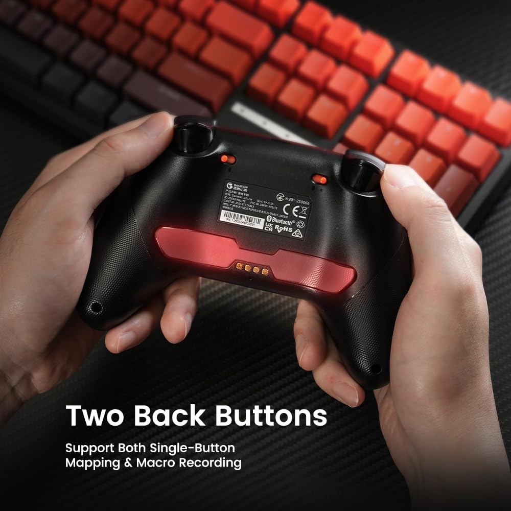

5,000円以下で、プロが使う機能がほぼ揃う。そのことに気づいたとき、コントローラー選びの基準が変わった。
背面ボタン付きコントローラーへの興味は前からあった。親指をスティックから離さずにジャンプできる。アクション系のゲームで明らかに有利になる。でも背面ボタン付きモデルは軒並み高い。純正のElite、SCUFといった製品は2〜3万円を超える。「そこまで出すのか」という壁が、ずっとあった。
GameSir Nova 2 Liteは、その壁を取り払う。5,000円以下で、ホール効果スティック・1000Hzポーリングレート・2つの背面マクロボタン・トリガーストップが全部ついてくる。「試しに背面ボタンを体験してみたい」という入門から、「本気でプレイに活かしたい」という中上級者まで、このコントローラー1本で応える。
GameSir Nova 2 Liteとは
中国の周辺機器ブランドGameSirが展開する、コスパ重視コントローラーシリーズ「Nova Lite」の第2世代モデル。PC・Switch・iOS・Android対応のマルチプラットフォーム設計で、2.4GHz無線レシーバー・Bluetooth・有線の3接続方式を備える。前モデルからの主な進化点はポーリングレートが1000Hzに向上した点と、背面ボタンのマクロ対応が強化された点だ。
主要スペック
| 接続方式 | 2.4GHz USBレシーバー / Bluetooth / 有線（Type-C） |
|---|---|
| ポーリングレート | 1000Hz（2.4GHz・有線時） |
| スティック | ホール効果センサー（アンチドリフト） |
| トリガー | ホール効果アナログトリガー＋トリガーストップ機構（2段階） |
| 背面ボタン | M1・M2（単一ボタンマッピング＋マクロ記録対応） |
| 十字キー | メカニカル円形設計（プロゲーマーXiaoHai監修） |
| 振動 | 非対称デュアルランブルモーター |
| バッテリー | 600mAh |
| 対応プラットフォーム | PC（Steam対応）/ Switch（Switch2報告あり）/ iOS / Android |
背面ボタン付きコントローラーの「本質的な価値」

背面ボタンを使ったことがない人に説明する。格闘ゲームやアクションRPGでは、ジャンプ・回避・必殺技などを親指でABXYボタンを押しながら、同時に右スティックでカメラを操作する局面が頻繁に発生する。これは人間の手の構造上、非常に難しい。どちらかを犠牲にしなければならない。
背面ボタンはその矛盾を解決する。人差し指・中指の自然な位置にある背面のM1・M2ボタンにジャンプやアビリティを割り当てることで、親指はスティックを離さずに済む。操作の自由度が根本から変わる体験だ。
Nova 2 Liteの背面ボタンは単純なボタンマッピングだけでなく、複数のボタン入力をシーケンスとして記録するマクロ機能にも対応している。格ゲーの難しいコンボを1ボタンに圧縮する、RPGの特定のメニュー操作を簡略化する——専用アプリで設定できるこの柔軟性は、5,000円以下のコントローラーが持つものではなかった。
使ってわかった、3つのポイント
1. ホール効果スティックの「ドリフトしない」は、本当に安心感が違う
従来のポテンショメーター式スティックは経年劣化でドリフト（意図しない入力）が発生する宿命がある。一度起きると修理か買い替えしかない。PS4・PS5・Switchの純正コントローラーのドリフト問題は多くのユーザーを悩ませてきた。
ホール効果センサーは磁気を使った非接触式で、物理的な摩耗が発生しない。理論上はドリフトが起きない。実際に使い込んでいくと、スティックの精度が変わらないことへの安心感は思った以上に大きい。「しばらく使ったらスティックがずれる」という前提で買い替えコストを計算しなくていい。
2. 1000Hzポーリングレートは、入力遅延を体感レベルで変える
一般的なゲームパッドのポーリングレートは125〜250Hz程度。Nova 2 Liteは2.4GHz接続時に1000Hzを達成する。1秒間に1000回コントローラーの状態をPCが確認する、という数字だ。
格闘ゲームや反射神経が問われるゲームでは、この差が「操作した気がするのに動かなかった」という感覚の有無に直結する。高ポーリングレートのマウスでFPSが変わるのと同じ原理で、コントローラーでも確実に反応の鋭さが変わる。
3. トリガーストップで、シューターの操作感が別物になる
LT・RTトリガーには2段階のストップ機構がついている。「ショート」設定にすると、トリガーの稼働距離が短くなり、フルプルまでの時間が短縮される。FPSやTPSで射撃ボタンをより素早く入力できるようになる。
「長い」と「短い」の切り替えは本体側面のスイッチで瞬時に行える。ゲームのジャンルや好みに応じてリアルタイムで変更できる点は、この価格帯ではなかなか得られない機能だ。
- ホール効果スティックの「ドリフトしない」安心感。
磁気を使った非接触式で物理的な摩耗が発生せず、理論上ドリフトが起きない。「しばらく使ったらスティックがずれる」という前提で買い替えコストを計算しなくていい。 - 1000Hzポーリングレートで入力遅延が体感レベルで改善。
一般的なゲームパッドの125〜250Hzに対し、Nova 2 Liteは2.4GHz接続時に1000Hzを達成。「操作した気がするのに動かなかった」という感覚が減る。 - トリガーストップでシューターの操作感が別物に。
LT・RTトリガーの稼働距離を「ショート」に切り替えられ、フルプルまでの時間が短縮される。本体側面のスイッチでリアルタイムに切り替え可能。 - 背面ボタンはマッピングだけでなくマクロにも対応。
複数のボタン入力をシーケンスとして記録できる専用アプリの柔軟性は、5,000円以下のコントローラーが持つものではなかった。
正直に書く、気になる点
- ジャイロセンサーは非搭載。
Switchのゼルダやスプラトゥーンなど、ジャイロ操作が前提のゲームには対応できない。Switchメインでジャイロを多用する人は、対応モデルを選ぶ必要がある。 - バッテリー容量は600mAhとコンパクト。
長時間のセッションでは途中充電が必要になる場合がある。有線で使いながら充電できるので実用上は問題ないが、完全ワイヤレスで丸一日使いたい場合は注意したい。 - ABXYボタンはメンブレン式。
クリック感はしっかりあり実用上は問題ないが、カチカチとした高いタクタイルフィードバックを求める人には物足りないかもしれない。ショルダーボタン（LB/RB）はメカニカル式でこちらはクリア感が良い。
総評
背面ボタン付きコントローラーの世界に入るとき、「まず安いやつで試してみよう」という選択がある。Nova 2 Liteはその「安いやつ」が持つ妥協感を、徹底的に排除している。ホール効果スティック、1000Hzポーリングレート、マクロ対応背面ボタン、トリガーストップ——2〜3万円のモデルで当たり前に求めてきた機能が、5,000円以下に全部入っている。
「入門用」のつもりで買って、そのまま「メイン機」になる可能性が高い。それがNova 2 Liteの正直な評価だ。背面ボタン付きコントローラーを探しているなら、ここから始めて損はない。